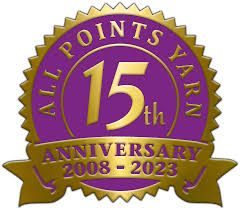
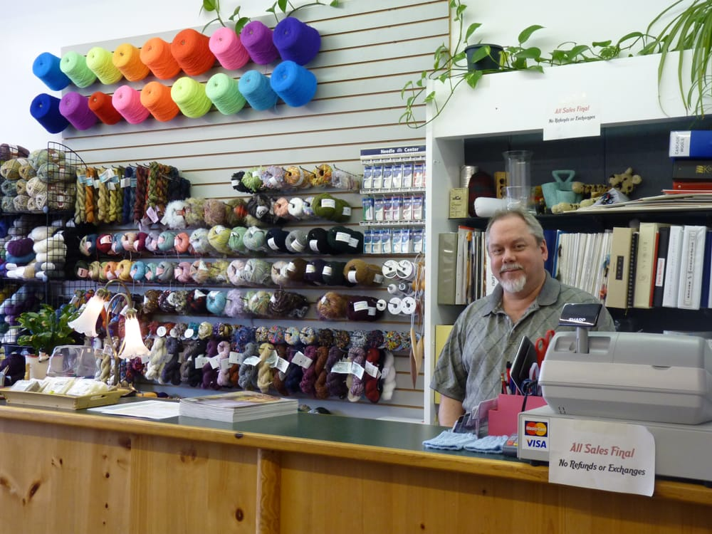
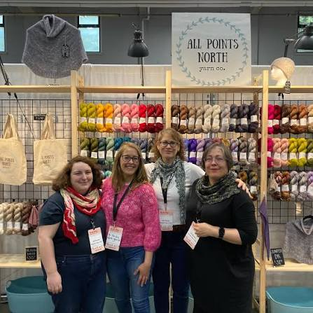

All Points Yarn is located in Des Moines, Washington, a few minutes south of Seattle International Airport on scenic Puget Sound. The store is filled with creativity and innovation in the fiber arts, and we're devoted to the growing community of hand and machine knitters and crocheters throughout this region and around the world. We want to be sure you receive the best products, services, and education you can in hand knitting, crochet, machine knitting, embroidery, needlepoint and related fiber arts.
We're here to serve, so if you would like a class or workshop arranged to suit your schedule, please let us know. In the meantime, download the current edition of the All Points Yarn List of Classes, and see what's in store! Your hooks and needles will thank you!


Tuesday - Saturday
10 a.m. - 5 p.m.
Sunday - Monday
Closed
Special Classes and Events
As announced, may include Sundays & Mondays
All Points Yarn in Des Moines, WA, opened May 13, 2008. The store is located at 21921 Marine View Drive South, Des Moines, WA 98198.
Large windows brighten the welcoming interior where there is plenty of comfortable seating and a friendly place to stitch and converse. All Points Yarn offers wonderful beginning to advanced classes in hand knitting, crochet, machine knitting, needlepoint, embroidery, felting, dyeing, and more. All Points Yarn is a center for excellence in the needle arts, assisting customers in all phases of their working with fiber:
Selecting color, building and blending plies, with a marvelous yarn dispensary,
Combining fibers with traditional and inventive stitches and techniques for uniquely beautiful textures,
Providing excellent instruction in all aspects of garment design and construction for hand and machine knitters, crocheters, and those who felt and embellish.
Publishing new knit and crochet designs for the new or long-time fiber artist.

Thanks to our wonderful local community of knitters, crocheters, and stitchers from the areas in and around Des Moines, including West Seattle, Burien, Sea-Tac, Federal Way, Kent, and Renton, the busy airline personnel and travelers visiting on their way to and from Sea-Tac International Airport, and the diverse youth and senior communities and groups in the area! All Points Yarn offers something for anyone. Special orders, product research and sourcing are sought-after features of the complete customer service experience provided at All Points Yarn.
All Points Yarn carries a broad selection of products and yarns for all uses, from dozens of suppliers, such as Brown Sheep, Noro, Knitting Fever, King Cole, Ella Rae, Filatura di Crosa, and Yarn Country Yarns to name a few, and has offerings from the classic producers like Lion Brand, Red Heart, and Bernat, etc., that you won't find in the large department or liquidation stores.
All Points Yarns features the fine Addi brand lines of needles, bamboo needles from Clover, and SeeKnit, and popular brands Denise, and Brittany. All Points Yarn also brings in accessories and products directly from their manufacturers, whether from Italy, France, or wherever around the world these treasures are found.
So why the name “All Points Yarn”? This name resulted from the sense of global connectedness, wishing to be local focal point for fiber in a world of fiber activities. From the universe of symbols like the compass rose, we chose the yarn ball to signify the handmade, personal touch of fiber and making we associate with yarn. We're generating a unique placement in the constellation of businesses selling yarn. Across time and continents, All Points Yarn knits together the community of new and learned fiber artists alike. Pleasant, Excellent Customer Service is our hallmark!